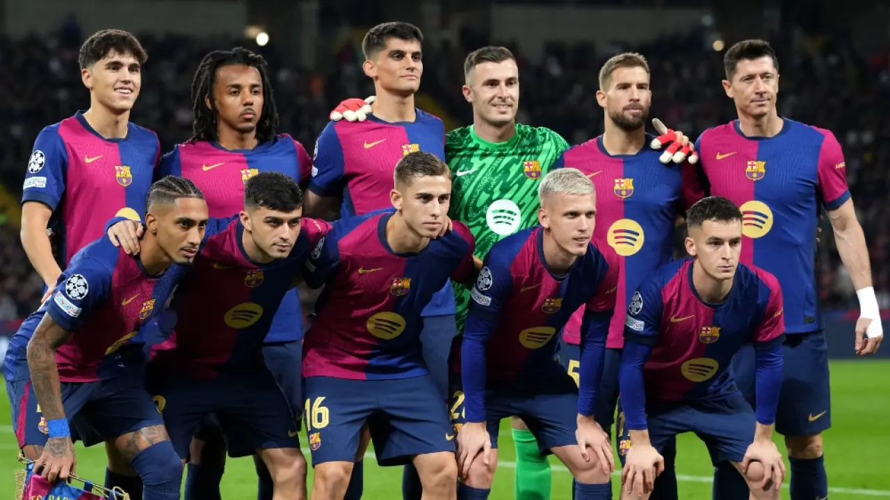
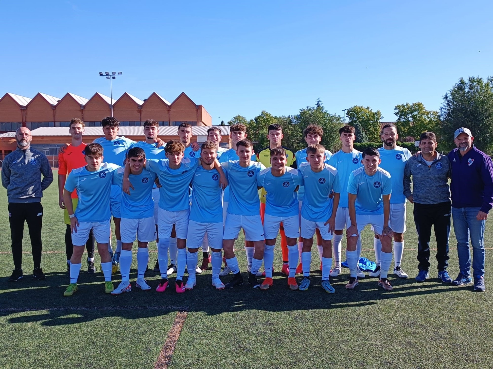
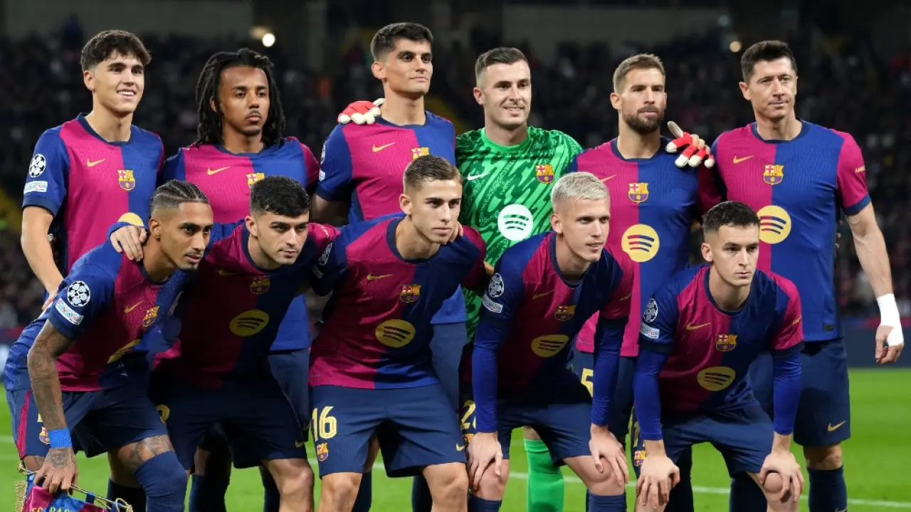
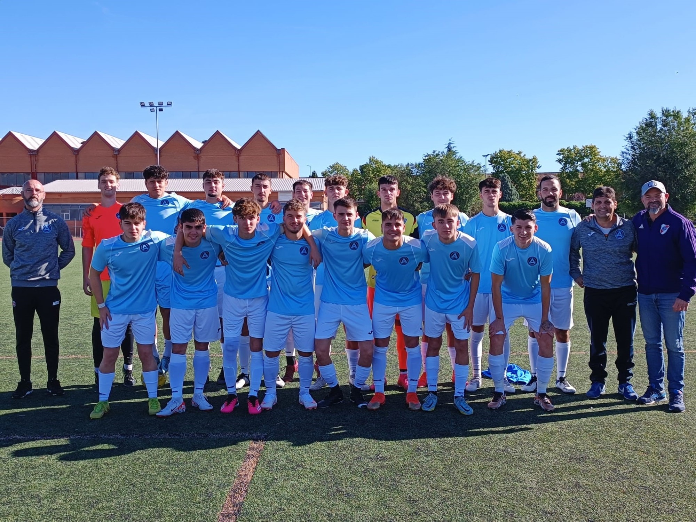

Una historia de pasión y comunidad
En 1952, un grupo de vecinos apasionados se reunió en el barrio con un sueño: crear un club que representara los valores de la comunidad. Con apenas recursos pero mucha voluntad, nació nuestro club en un terreno que los fundadores acondicionaron con sus propias manos.
Los primeros años fueron de pura lucha y sacrificio. Los socios fundadores trabajaron incansablemente para construir las primeras instalaciones: vestuarios modestos, tribunas de madera y, por supuesto, las canchas que se convertirían en el corazón del club.
Durante los años 60 y 70, el club experimentó un crecimiento extraordinario. Se incorporaron nuevas disciplinas, se mejoró la infraestructura y comenzamos a formar atletas que luego brillarían en competencias de mayor jerarquía.
Hoy, más de 70 años después, seguimos siendo el orgullo del barrio. Nuestra institución ha crecido pero mantiene intactos los valores que nos dieron origen: comunidad, excelencia y tradición.
 




Nuestra sede histórica
Completamente renovada manteniendo su esencia original